What's the Deal?
The deal is simple: Move to Monticello, show Proof of Residency (a lease agreement, or a home purchase as a primary residence), proof of remote worker status, and get life-long passes for the whole family at the world-class Hideout Golf Course and the city pool! No waiting a whole year, as some other towns do, to receive incentives!
Monticello – So, what about it?
Monticello is the county seat of San Juan County, part of the 4-corners area. At
7,000 feet, summers are moderate with average summer temps around the mid-80's,
cooling off nicely in the evening. Few feel the need for expensive air conditioning.
Winters do get cold, but nowhere near arctic temps. Snow does accumulate (except in
drought years); investing in a snow blower may be wise. The climate is just right to
keep the insect population way down! Coming from the deep south? You'll think
there aren't any insects here!
For further descriptions and beautiful
pictures, click on https://www.monticelloutah.org/, https://www.visitutah.com/places-to-go/cities-and-towns/monticello
and https://en.wikipedia.org/wiki/Monticello,_Utah
Following
are just a very few highlights:
You wouldn't think it with such a small town, but there's pretty darn good dining right here in town!

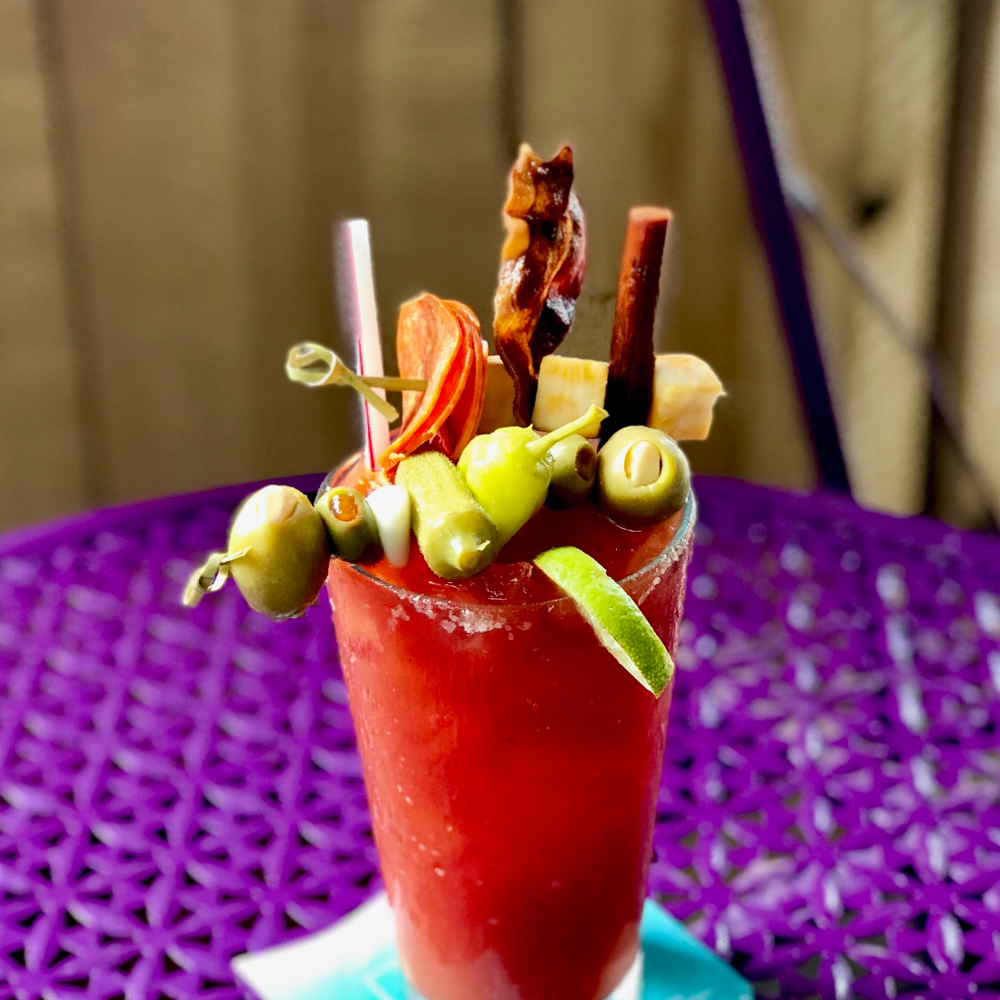
Amazing – a world-class golf course in a small town – How is that possible?
Two distinguishing features elevate The Hideout to world-class: 1) Each hole is its own unique experience—no back-and-forth with perhaps only a thin line of trees or rough delineating fairways. In fact, you can hardly even see other fairways—something even PGA courses can scarcely boast of; 2) stunning, panoramic vistas on most holes. And it doesn't hurt that the back 9 features TWO par-5's in a row. See how one golfer described the course:
"The Monticello Hideout GC is a magnificent course—as attested by being ranked #2 in
Utah and #23 in the nation for municipal courses.
Every hole is a unique
experience, yet well suited for players at all experience levels with a choice of 4
cleverly placed tee boxes. From a very inviting #1 hole with a 60-foot drop to the
fairway all the way to the signature #18, a tree-lined narrow fairway with a water
hazard along the side and in front of the green, you'll have a great
experience.
The scenery is stunning (you can see the Colorado Rockies 70
miles away to the East, and the 11,360-foot high Abajos immediately to the West);
elevation changes, natural hazards, a large variety of shrubbery, bushes, and trees
all add to the mystique. Frequent sightings of deer, wild turkeys, rabbits, and
chipmunks complete the experience."
The course is over 7,000 feet at its
lowest point to 7,185 at its highest. Let's have some pics do the talking:
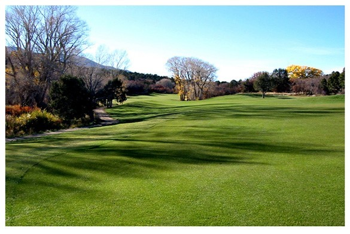
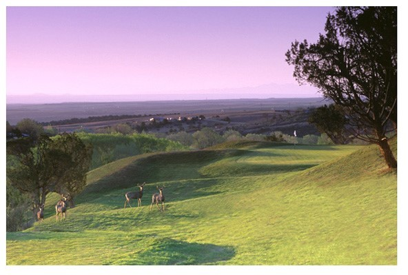
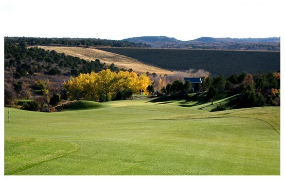
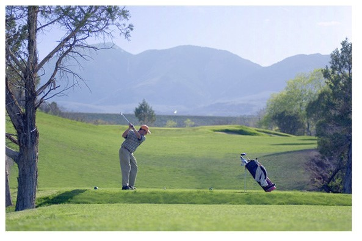
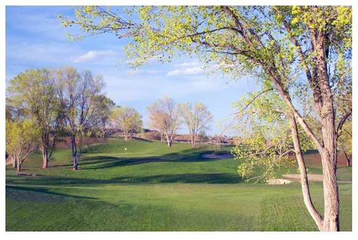
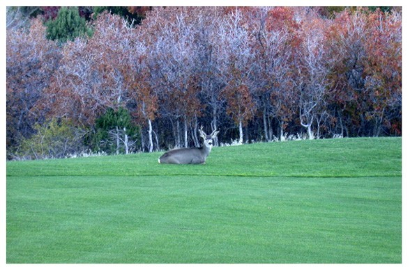
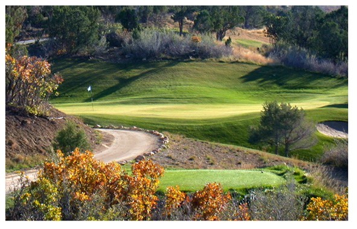
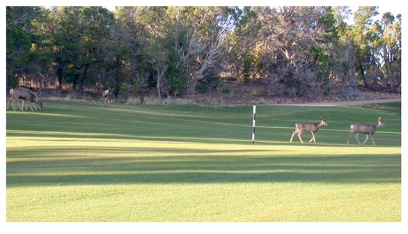
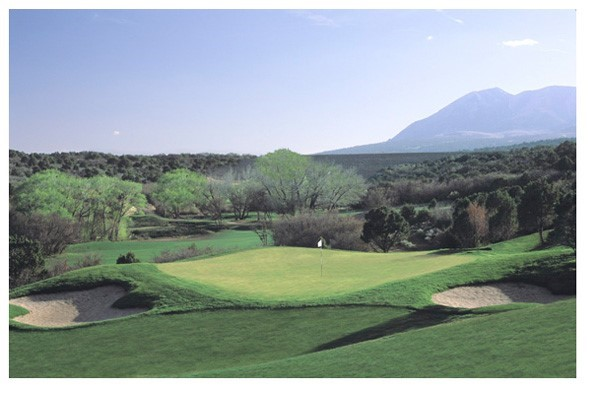
Miscellaneous
Besides glamping, camping at Dalton Springs or Buckboard campgrounds just up the mountain west of Monticello, or the premier annual ATV Safari and a 101 other things to do, here are some landscape images to further whet your appetite!
To further whet your appetite, how about some stunning landscape scenes?
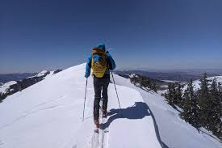
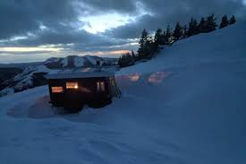
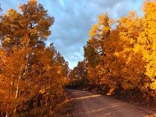
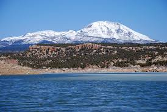
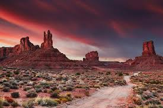
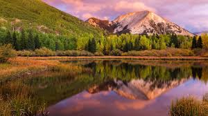
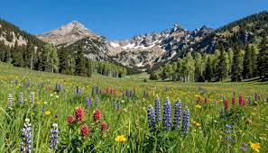
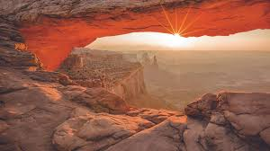